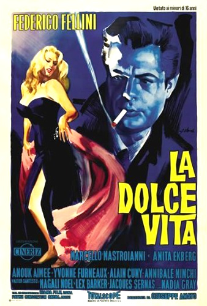

La Dolce Vita
34th Academy Awards
(Oscars 1962)
4 Nominations, 1 Award
| Nominations | ||
|---|---|---|
| Category | Nominees | Result |
| Directing | Federico Fellini | Nominated |
| Writing (Story and Screenplay--written directly for the screen) | Brunello Rondi, Ennio Flaiano, Federico Fellini, and Tullio Pinelli | Nominated |
| Art Direction (Black-and-White) | Piero Gherardi | Nominated |
| Costume Design (Black-and-White) | Piero Gherardi | Won |